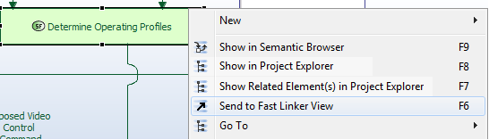
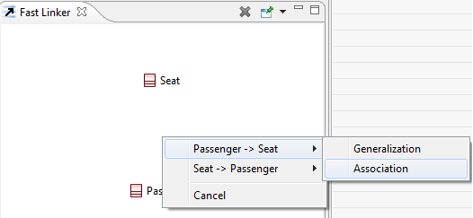
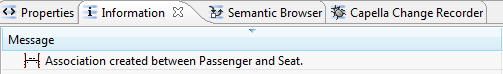

Fast Linker View
Introduction
The Fast Linker View enables to create links between elements of the opened Capella Model.
Fast Linker capabilities are disabled by default, in order to enable them, please refer to
Capella Capabilities
(online documentation)

How to Put a Model Element in the Fast Linker?
There are several ways to send elements in the Fast Linker:
- Drag & Drop from viewers (Project Explorer, Semantic Browser),
- Contextual menu (Viewers and Diagrams), with the “Send to Fast Linker View” command,

- F6 shortcut (Viewers and Diagrams).
Link Creation Procedure
The following things happen when the user put an element in the Fast Linker:
- If the Fast Linker is empty, it checks whether this element can be part of a link (as source or target),
- If no link is possible, the Fast Linker rejects the model element,
- If at least one link is possible, the Fast Linker accepts the model element and it becomes visible in the Fast Linker view,
- If the Fast Linker already contains one element, it gets the links between both elements (whatever which is source or target),
- If no link is possible, the Fast Linker rejects the model element (the first model element is leaved untouched),
- If one link is possible, it is created,
- If several links are possible, a menu is displayed to allow the user to make a choice:

- Once a link is created, a message is added in the Information View:

- If a model element is once again put in the Fast Linker, the procedure restarts as if the Fast Linker was empty.
Additional Features
The Fast Linker offers some features to ease its usage:
- A clear command (
 ),
),
- A pin command (
 ) allowing to keep an element in the Fast Linker in order to create several links involving it,
) allowing to keep an element in the Fast Linker in order to create several links involving it,
- There is two ways to pin an element:
- Select it in the Fast Linker view and then click on the pin button,
- Use the drop down menu of the pin button and select the element to pin:

- The pinned element is displayed in bold,
- The same procedures can be used to unpin a pinned element
Multiple Selection
The Fast Linker view supports multiple sources and multiple targets to create links between each couple of source and target when possible.

|

|
- This feature is not yet implemented for every link but works with classes associations and generalizations.
- Note that multiple sources can have only one target for a generalization link.
|